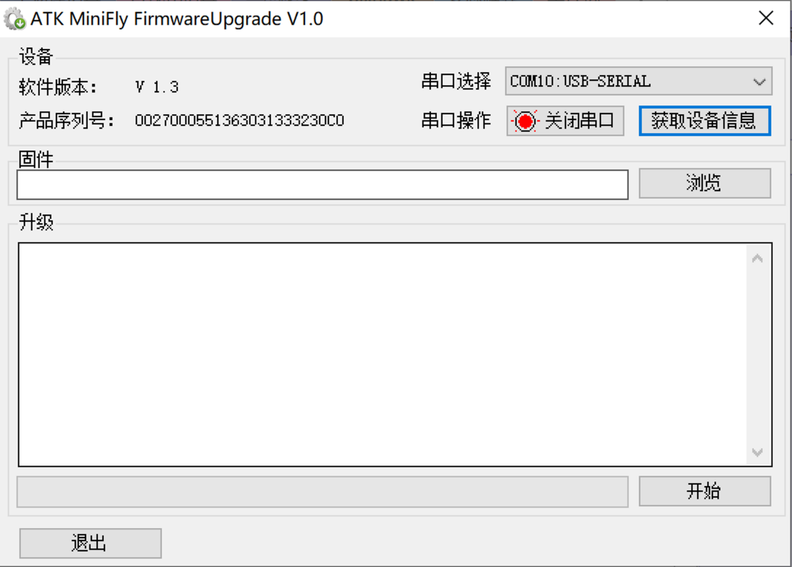
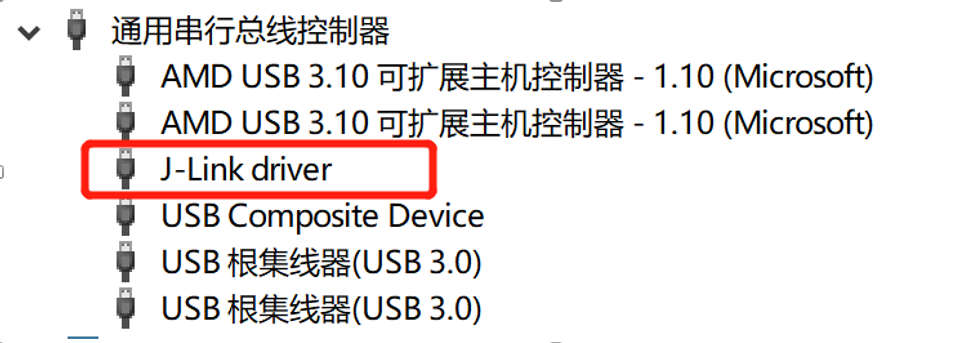

软件与硬件架构
Minifly(硬件)
在入手这款飞机之前，主要还是在飞行力学的学习、控制律的仿真上。疫情期间自学了一些控制理论，但都是理论的、仿真的，我更希望是自己的研究能够落地。2020年10月，出于对飞控的学习，购入这款小飞机。有两个方面的考虑，一是小巧，方便操作及调试（实验室虽然有资源，但更希望能独立地在小巧的平台上测试）；二是开源的飞控，便于学习，同时便于二次开发（PX4的结构对于当时的我，体量太大，不能有一个完整的认识，而且C比C++简单一些），官方有很详细的使用资料及开发手册，非常方便。
飞行器
MiniFly 飞行器采用双微芯片控制，与PX4的较为相似。
Cortex-M4 芯片为STM32F411CEU6，为系统的主芯片， 主要负责传感器读取，数据融合，PID 控制和电机控制等。
Cortex-M0 芯片的内核为 NRF51822，主要负责无线通信和电源管理。
这 2 个 芯片之间的通信方式为 UART。硬件部分官方资料包里有很多详细的内容，这里只贴个图。
遥控器
MiniFly 遥控器采用了 STM32F103C8T6 作为控制芯片，外围硬件主要有蓝色 0.96 寸 OLED、NRF24L01+、RF 功率放大、2.4G 天线、摇杆、按键、蜂鸣器、LED 等。
固件下载
软件安装
keil有多种版本，安装keil—arm版本、完成破解
这个版本新建项目可以看到ARM、STM
正点原子主执行芯片为STM32F411CEUx
代码编译
打开项目文件Firmware_F411.uvprojx，keil界面左上角有“构建”、“重新构建”、“下载”的按钮。在构建完成后，在项目文件夹bin中会生成一个Firmware_F411_V1.3.bin文件（二进制），可以下载到飞机的芯片中运行。编译完成后，没有报错的情况如下：

刷固件的方法
USB刷
安装VCP_V1.4.0_Setup.exe STM32 USB虚拟串口驱动
打开设备管理器

软件：ATK Minifly FirmwareUpgrade V1.0

选择升级模式
将四轴或遥控器进入 Bootloader 程序模式等待固件升级，进入 Bootloader 程序模式后，将USB插入电脑，打开对应的串口号。【Bootloader 程序等待固件升级超时时间为 60S，60S 后会跳转至固件程序(开机)。】
四轴开机时，先运行 Bootloader 程序，判断当前按键为短按还是长按（>3S），短按则跳转至固件程序，长按则留在 Bootloader 程序等待固件升级。只有 NRF51822 没有 Bootloader 程序，Bootloader 程序主要用于固件跳转和 USB 固件升级【第一次刷固件，需要先刷Bootloader 程序】
四轴进入 Bootloader 方法：四轴在关机状态下长按电源键开机，等待 M2 灯先闪烁 M3灯后闪烁再松开按键即可。
遥控器进入 Bootloader 方法：遥控器在关机状态长按 KEY_L 键开机，等待 LED1（蓝色）闪烁再松开按键即可。
选择固件升级【四轴升级文件为 Firmware_F411.bin，遥控器升级文件为 Firmware_F103.bin】
仿真器刷
仿真器驱动安装
需要驱动—Setup_JLink_V512g.exe仿真器驱动

线的连接
| | |
| —————————————————————————————— | —————————————————————————————— |若未设置过仿真器，需先设置仿真器，具体见下一步“在线仿真”的介绍
在keil界面，点“下载”按钮下载
在线仿真
传感器用飞机的，飞控程序运行电脑上的。用于调试飞控程序，可以进入程序内部，观察变量的值。
插入USB、JLINK
设置仿真器

设置Flash
设置断点
连接飞机，并设置debug
运行
调试状态展示
软件架构
电源模块、组计算模块、遥控器模块都使用C语言编写，脉络也很清晰。除部分补充内容外，本节主要搬运自说明书。
电源数据管理芯片NRF51822
如图 6.1 即为 NRF51822 代码关系图， esb.c 是无线通信驱动代码，systick.c 是系统滴答定时器驱动代码，uart.c 是串口驱动代码，button.c 是按键驱动代码，pm.c 是电源管理驱动代码。
遥控器发送过来的数据包通过 radiolink.c 传送至 main.c，main.c 解析数据包，如果不是发给 NRF51822 的则通过 uartlink.c 转发给 STM32F411；当 STM32F411 接收到一条数据 包后会立即通过 uartlink.c 返回一条数据包到 main.c，main.c 再通过 radiolink.c 转发给遥控器。 就这样 NRF51822 起到了通信桥梁的作用。
主计算芯片STM32F411
radiolinkTask：无线通信任务。该任务主要负责接收从 NRF51822 发送（串口方式）过来的数据，然后对数据进行打包和校验，打包成 ATKP 格式并校验无误后发送到atkpRxAnlTask 的接收队列里，同时回传一帧数据给 NRF51822。
usblinkRxTask：USB 通信接收任务。该任务主要负责接收上位机发下来（USB 虚拟串口方式）的数据，然后对数据进行打包和校验，打包成 ATKP 格式并校验无误后发送到atkpRxAnlTask 的接收队列里。
attkpRxAnlTask：ATKP 数据包接收处理任务。该任务主要是处理遥控器和上位机发下来的数据包，解析到的控制指令则发送到stabilizerTask 中去。
stabilizerTask：四轴平衡控制任务。该任务运行的内容比较多，也是比较关键的内容。包括传感器数据读取，数据融合，获取控制数据，空翻检测，异常检测，PID 控制，PWM输出控制等。
wifilinkTask：手机控制任务。该任务主要是接收 WiFi 摄像头模块的串口数据，然后按照 WiFi 摄像头模块通讯协议解析成对应的控制指令，并将控制指令发送到 stabilizerTask。
atkpTxTask：ATKP 数据包发送任务。该任务主要是获取 stabilizerTask 中的传感器数据、姿态数据、电机 PWM 输出数据等数据以定周期发送给 adiolinkTask 和 usblinkTxTask，由这两个任务分别发送飞遥控器和上位机。
usblinkRxTask：USB 通信发送任务。该任务主要负责发送 atkpTxTask 发送过来的数据包，这些数据包主要是传感器数据、姿态数据等。
各个模块的更新频率如下：
| 模块 | 执行频率 | 执行函数 |
|---|---|---|
| 系统刷新频率 | 1000Hz | - |
| 读传感器 | 500Hz | sensorAcquire |
| 姿态解算 | 250Hz | imuUpdate |
| 位置解算 | 250Hz | positionEstimate |
| 目标姿态与飞行模式设定 | 100Hz | commandGetSetpoint |
| 高度快速调节 | 250Hz | fastAdjustPosZ |
| 读取光流数据 | 100Hz | getOpFlowData |
| 翻滚检测 | 500Hz | flyerFlipCheck |
| 异常检测 | 1000Hz | - |
| PID控制计算 | 1000Hz | stateControl |
| 电机输出 | 500Hz | powerControl |
遥控器
radiolinkTask 主要功能是发送 ATKP 数据包给四轴，并接收四轴返回的应答包。 radiolinkTask 函数在 radiolink.c 中。
usblinkTxTask 主要功能是给 ATKP 数据包加上帧头和校验并发送给上位机。 usblinkTxTask 函数在 usblink.c 中。
usblinkRxTask 主要功能是接收上位机发下来的串口数据，按照 ATKP 格式打包。 usblinkRxTask 函数在 usblink.c 中。
commanderTask 主要功能是将采集摇杆电位器的 AD 值转换为姿态控制命令，并以 10ms 的周期通过 radiolink 链路发送给四轴。commanderTask 函数在 remoter_ctrl.c 中。
keyTask 主要功能是扫描按键，根据按键按下的时间来区分长按和短按。keyTask 函数 在 keyTask.c 中。
displayTask 主要功能是显示界面，50ms 刷新一次界面。displayTask 函数在 display.c 中。
configParamTask 主要功能是保存参数。任务中 1000ms 判断一次配置参数有无改变，当 有参数改变后 6S 内不再改变则将新参数写入 Flash。这样做的目的是避免在微调四轴时频繁 写 Flash，Flash 擦写次数是有限的。configParamTask 函数在 config_param.c 中。
radiolinkDataProcessTask 主要功能是处理四轴返回的应答包数据，处理完之后再通过 usblink 链路转发给上位机。radiolinkDataProcessTask 函数在 atkp.c 中。
usblinkDataProcessTask 主要功能是处理上位机发下来的 ATKP 数据包，处理完之后通过 radiolink 链路转发给四轴。上位机发下来的 ATKP 数据包由 usblinkRxTask 打包。 usblinkDataProcessTask 函数在 atkp.c 中。
旋翼main函数
系统使用FreeRTOS嵌入式实时操作系统。
先初始化，然后创建各项任务，最后开启任务。为了系统稳定性，最后在主函数中做循环。
main.c
1 |
|
初始化systemInit
1 | /*底层硬件初始化*/ |
startTask创建任务
1 | BaseType_t xTaskCreate( TaskFunction_t pxTaskCode, |
| pvTaskCode | 指向任务的入口函数. 任务必须执行并且永不返回 (即：无限循环). / Defines the prototype to which task functions must conform. Defined in this file to ensure the type is known before portable.h is included. / typedef void (TaskFunction_t)( void ); |
|---|---|
| pcName | 描述任务的名字。主要便于调试。最大长度由configMAX_TASK_NAME_LEN.定义 |
| usStackDepth | 指定任务堆栈的大小 ，堆栈能保护变量的数目- 不是字节数. 例如，如果堆栈为16位宽度，usStackDepth定义为 100, 200 字节，这些将分配给堆栈。堆栈嵌套深度（堆栈宽度）不能超多最大值——包含了size_t类型的变量 堆栈的字节数等于堆栈的宽度（ sizeof(StackType_t)）乘以深度。 StackType_t pxStack; / Allocate space for the stack used by the task being created. / pxStack = ( StackType_t ) pvPortMalloc( ( ( ( size_t ) usStackDepth ) sizeof( StackType_t ) ) ); /lint !e961 MISRA exception as the casts are only redundant for some ports. */ |
| pvParameters | 指针用于作为一个参数传向创建的任务 |
| uxPriority | 任务运行时的优先级( 0 : 优先级最低) |
| pvCreatedTask | 用于传递一个处理——引用创建的任务的句柄 |
开始任务创建了10个任务，在前面用序号1-10标出来了。方便后面对照。开始任务的作用就是创建其它任务，创建完后就把自己给删除了。
因为调度器已经开启，所以在这里创建任务时，需要进入临界保护，就是关中断。
/创建任务/
void startTask(void arg)
{
taskENTER_CRITICAL(); /进入临界区*/ xTaskCreate(radiolinkTask, “RADIOLINK”, 150, NULL, 5, NULL); /创建无线连接任务/
xTaskCreate(usblinkRxTask, “USBLINK_RX”, 150, NULL, 4, NULL); /创建usb接收任务/
xTaskCreate(usblinkTxTask, “USBLINK_TX”, 150, NULL, 3, NULL); /创建usb发送任务/ xTaskCreate(atkpTxTask, “ATKP_TX”, 150, NULL, 3, NULL); /创建atkp发送任务/
xTaskCreate(atkpRxAnlTask, “ATKP_RX_ANL”, 300, NULL, 6, NULL); /创建atkp解析任务/
xTaskCreate(configParamTask, “CONFIG_TASK”, 150, NULL, 1, NULL); /创建参数配置任务/
xTaskCreate(pmTask, “PWRMGNT”, 150, NULL, 2, NULL); /创建电源管理任务/
xTaskCreate(sensorsTask, “SENSORS”, 450, NULL, 4, NULL); /创建传感器处理任务/
xTaskCreate(stabilizerTask, “STABILIZER”, 450, NULL, 5, NULL); /创建姿态任务/
xTaskCreate(expModuleMgtTask, “EXP_MODULE”, 150, NULL, 1, NULL); /创建扩展模块管理任务/
printf(“Free heap: %d bytes\n”, xPortGetFreeHeapSize()); /打印剩余堆栈大小/
vTaskDelete(startTaskHandle); /删除开始任务/
taskEXIT_CRITICAL(); /退出临界区/
}
vTaskStartScheduler任务调度
- xTaskCreate() 创建空闲任务，其优先级为最低：0；
- 关闭中断功能，使能任务调度功能；
- 宏定义portCONFIGURE_TIMER_FOR_RUN_TIME_STATS：系统运行时间统计初始化；
- 设置系统节拍定时器，并启动第1个任务；
- 返回空闲任务句柄。